xc-os system 规划介绍
版本: v1.0
日期: 2025-01-16
作者: kevin yuanxin
| 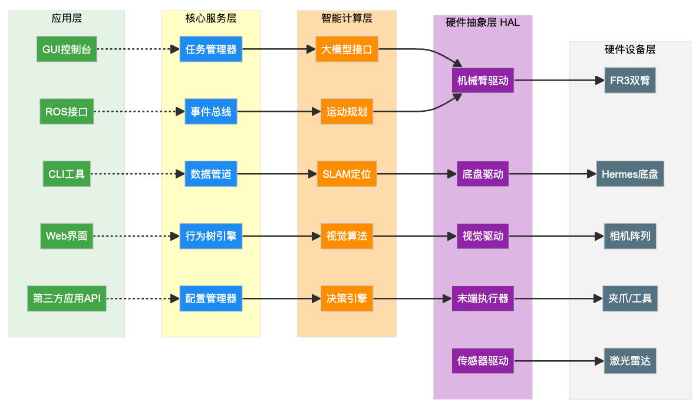 |
| XC-OS采用标准的五层架构设计，从上到下依次为：应用层（绿色）提供用户接口，核心服务层（蓝色）负责系统调度， 智能计算层（橙色）处理AI任务，硬件抽象层（紫色）统一硬件接口，硬件设备层（灰色）包含实际设备。 |
XC-OS采用经典的五层架构设计，这种分层架构是机器人操作系统的标准设计模式。每一层都有明确的职责边界，层与层之间通过标准化接口进行通信，确保系统的模块化和可扩展性。
功能定位：
作为系统最上层，直接面向用户和开发者
提供多种交互方式，满足不同使用场景需求
支持本地和远程控制，便于调试和部署
核心组件说明：
GUI控制台：基于Qt框架开发的桌面应用程序，提供3D可视化、参数配置、实时监控等功能
Web界面：基于React的B/S架构应用，支持跨平台远程访问，适合运维监控
CLI工具：命令行接口，方便自动化脚本和批处理操作
ROS接口：提供ROS2兼容接口，便于与现有ROS生态系统集成
第三方应用API：RESTful API和gRPC接口，支持外部系统集成
功能定位：
系统运行的中枢神经，负责任务调度和资源管理
提供基础服务支撑，确保系统稳定运行
实现模块间的协调和通信
核心组件说明：
任务管理器：负责任务的创建、调度、执行和监控，支持优先级管理和并发控制
行为树引擎：实现复杂行为逻辑的编排和执行，支持条件判断和循环控制
数据管道：处理传感器数据流，提供数据预处理、过滤和分发功能
事件总线：基于发布-订阅模式的消息中间件，实现模块间解耦通信
配置管理器：集中管理系统配置，支持热更新和版本控制
功能定位：
提供AI能力支撑，实现机器人的智能化
集成各类算法模块，支持感知、理解、决策和规划
优化计算资源利用，平衡云端和边缘计算
核心组件说明：
大模型接口：集成GPT-4、Claude等大语言模型，提供自然语言理解和任务规划能力
视觉算法：包括目标检测（YOLO）、语义分割（SAM）、6D姿态估计等
SLAM定位：融合激光和视觉SLAM，实现精确定位和地图构建
运动规划：基于RRT*等算法的路径规划，支持双臂协调控制
决策引擎：基于规则和学习的混合决策系统，处理复杂场景
功能定位：
屏蔽底层硬件差异，提供统一的编程接口
管理硬件资源，确保访问安全和效率
支持硬件热插拔和动态配置
核心组件说明：
机械臂驱动：封装FR3机械臂的控制协议，提供关节和笛卡尔空间控制
底盘驱动：封装Hermes底盘的REST API，支持导航和避障
视觉驱动：统一管理多个相机，处理数据同步和标定
末端执行器：控制夹爪等工具，支持力控和位置控制
传感器驱动：集成各类传感器，提供统一的数据访问接口
功能定位：
物理硬件设备层，执行实际的动作和感知
通过各种通信协议与上层连接
提供状态反馈和故障诊断信息
核心组件说明：
FR3双臂：法奥机械臂，通过以太网TCP/IP通信
Hermes底盘：思岚移动底盘，通过HTTP REST API通信
相机阵列：3个Gemini335 ToF相机 + 3个2D相机
夹爪/工具：乐白电动夹爪，通过ModBus RTU控制
激光雷达：集成在底盘中的避障传感器
每个模块独立开发、测试和部署
模块间通过明确定义的接口通信
支持模块的动态加载和卸载
上层不直接访问下层的具体实现
每层只依赖直接下层的接口
跨层调用通过服务接口进行
采用异步消息传递机制
避免模块间的阻塞等待
提高系统的响应速度和并发能力
Python：主要开发语言，生态丰富，开发效率高
C++：用于性能关键模块，如实时控制和图像处理
TypeScript：Web前端开发，类型安全
Rust：安全关键模块的可选语言
gRPC：高性能的RPC框架，支持多语言
WebSocket：实时双向通信，用于Web界面
DDS：分布式数据服务，用于ROS2集成
MQTT：轻量级消息协议，用于IoT设备
所有模块运行在机器人主控计算机上
适合开发测试和单机器人应用
资源占用：16GB内存，4核CPU
核心服务和智能计算分离部署
支持多机器人协同工作
可选的云端服务支持
| 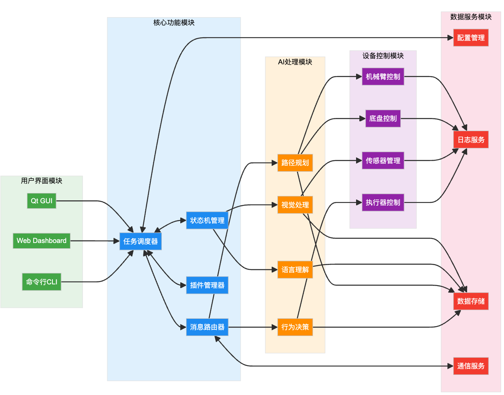 |
| 软件模块采用松耦合设计，各模块通过标准接口通信。核心功能模块作为中枢，协调UI、AI、设备和数据服务模块的交互。 |
软件模块关系图展示了XC-OS内部各功能模块之间的依赖和交互关系。整个系统采用松耦合设计，模块间通过标准接口和消息传递进行通信。
功能职责：
提供人机交互界面
显示系统状态和数据
接收用户指令和配置
模块组成：
Qt GUI：本地桌面应用，提供专业的控制界面，支持3D可视化和参数调整
Web Dashboard：基于浏览器的监控面板，支持远程访问和移动设备
命令行CLI：适合自动化脚本和批处理操作的文本界面
交互关系：
所有UI模块都通过任务调度器提交任务
不直接访问底层硬件，确保安全性
通过WebSocket或gRPC获取实时状态更新
功能职责：
系统核心逻辑处理
协调各模块工作
管理系统资源
模块组成：
任务调度器：管理任务队列，根据优先级分配执行资源
状态机管理：维护系统和子系统的状态，处理状态转换
消息路由器：负责消息的分发和路由，实现发布-订阅模式
插件管理器：管理第三方插件的加载、初始化和生命周期
交互关系：
任务调度器与状态机紧密协作，确保任务执行的正确性
消息路由器连接所有模块，提供统一的通信通道
插件管理器为扩展功能提供标准接口
功能职责：
提供智能化能力
处理感知和决策任务
生成控制策略
模块组成：
视觉处理：图像识别、目标检测、场景理解
语言理解：自然语言处理、意图识别、对话管理
路径规划：全局路径规划、局部避障、轨迹优化
行为决策：任务分解、策略选择、异常处理
交互关系：
视觉处理直接连接传感器管理模块
语言理解通过状态机触发相应动作
路径规划结果传递给设备控制模块
行为决策协调其他AI模块的工作
功能职责：
直接控制硬件设备
执行运动指令
反馈设备状态
模块组成：
机械臂控制：关节控制、笛卡尔控制、力控制
底盘控制：速度控制、位置控制、导航控制
传感器管理：数据采集、时间同步、标定管理
执行器控制：夹爪控制、工具切换、力反馈
交互关系：
接收AI模块的控制指令
向数据服务模块报告状态
通过传感器管理获取环境信息
功能职责：
提供数据存储和管理
记录系统运行日志
支持数据分析和回放
模块组成：
配置管理：系统参数、设备配置、用户偏好
日志服务：运行日志、错误日志、审计日志
数据存储：时序数据、文件存储、缓存服务
通信服务：网络通信、协议转换、数据压缩
交互关系：
为所有模块提供基础数据服务
配置管理影响系统启动和运行
日志服务收集所有模块的运行信息
用于需要立即响应的场景
采用RPC（远程过程调用）方式
适合参数查询、状态获取等操作
用于耗时操作和事件通知
基于消息队列实现
支持一对多的广播模式
用于高频数据传输
采用共享内存或DDS
适合传感器数据和视频流
数据服务模块（基础服务）
核心功能模块（系统框架）
设备控制模块（硬件接入）
AI处理模块（智能功能）
用户界面模块（交互界面）
使用依赖注入容器管理模块依赖
支持模块的mock和测试
便于模块的替换和升级
模块接口使用语义化版本
向后兼容的API设计
支持多版本共存
| 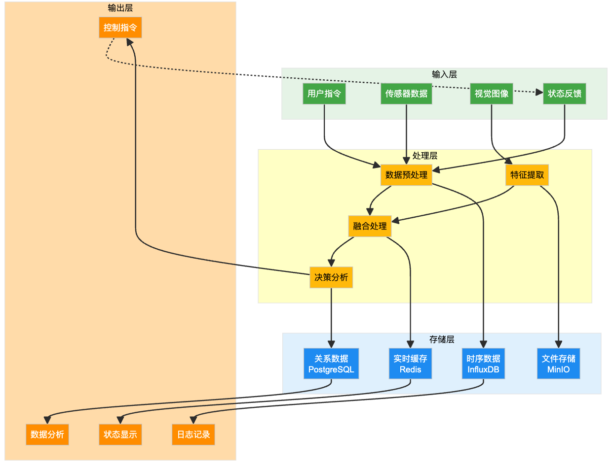 |
| 数据流从输入层经过处理层，根据数据类型分别存储到不同的存储系统，最终输出控制指令和分析结果。 系统支持实时数据处理和历史数据分析。 |
系统数据流图展示了数据从输入到输出的完整处理过程。采用流式处理架构，确保数据的实时性和可靠性。
数据来源：
用户指令：来自GUI、Web界面或API的控制命令
传感器数据：包括相机图像、激光雷达、编码器等
视觉图像：RGB图像、深度图像、点云数据
状态反馈：机械臂关节角度、底盘位置、系统状态等
数据特性：
数据频率：视觉30FPS，关节状态1kHz，激光雷达10Hz
数据量：视觉数据量最大，需要专门的处理通道
实时性要求：控制反馈要求低延迟（<10ms）
处理流程：
数据预处理：格式转换、坐标变换、时间戳对齐
特征提取：图像特征、点云特征、运动特征
融合处理：多传感器数据融合、状态估计
决策分析：基于处理后的数据进行决策
处理策略：
并行处理：利用多核CPU和GPU加速
流水线设计：各处理阶段并行执行
缓存机制：热点数据保存在内存中
存储架构：
实时缓存（Redis）：存储最新状态和热点数据，支持高速读写
时序数据库（InfluxDB）：存储传感器历史数据，支持时间序列查询
文件存储（MinIO）：存储图像、视频、日志文件等大容量数据
关系数据库（PostgreSQL）：存储配置信息、任务记录、系统元数据
存储策略：
分级存储：根据数据访问频率选择存储介质
数据压缩：对历史数据进行压缩存储
定期归档：将过期数据移至冷存储
输出类型：
控制指令：发送给机械臂、底盘的运动指令
状态显示：更新UI界面的显示内容
日志记录：系统运行日志和调试信息
数据分析：生成报表和分析结果
输出保障：
指令校验：确保输出指令的合法性
状态同步：保持显示状态与实际状态一致
日志完整：确保关键操作都有日志记录
采用事件驱动模式
数据到达即触发处理
优先保证低延迟
适用于非实时分析任务
定期批量处理历史数据
生成统计报表和趋势分析
处理连续的数据流
支持滑动窗口分析
适合视频流和传感器流
防止数据拥塞
动态调整采样率
优先级队列管理
数据校验和纠错
异常数据过滤
故障恢复机制
多源数据时间对齐
分布式时钟同步
数据一致性保证
| 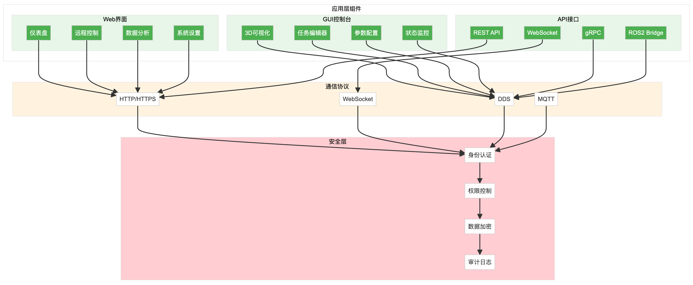 |
| 应用层提供多种交互方式：本地GUI提供专业控制界面，Web界面支持远程访问，API接口方便第三方集成。 所有访问都经过安全层验证。 |
应用层作为用户与系统交互的界面层，提供了多种访问方式以满足不同场景的需求。
3D可视化：实时显示机器人姿态、工作空间、障碍物
任务编辑器：图形化编程界面，支持拖拽式任务编排
参数配置：系统参数、硬件参数、算法参数的配置界面
状态监控：实时显示各子系统状态、传感器数据、性能指标
基于Qt6框架开发，跨平台支持
使用OpenGL进行3D渲染
支持多窗口、多屏幕显示
可定制的界面布局
支持鼠标、键盘、触屏操作
提供快捷键和手势控制
实时响应，流畅的动画效果
支持暗色和亮色主题
仪表盘：关键指标的可视化展示
远程控制：通过Web界面控制机器人
数据分析：历史数据查询和分析
系统设置：远程配置系统参数
前端：React + TypeScript + Ant Design
通信：WebSocket实时通信 + REST API
响应式设计，支持移动设备
PWA支持，可离线使用
HTTPS加密传输
JWT身份认证
基于角色的权限控制
操作审计日志
REST API：标准的HTTP接口，用于资源操作
WebSocket：实时双向通信，用于状态推送
gRPC：高性能RPC，用于内部服务调用
ROS2 Bridge：与ROS生态系统的桥接接口
RESTful风格，资源导向
统一的错误处理机制
版本化管理，向后兼容
完善的接口文档
API Key认证
OAuth 2.0支持
请求频率限制
IP白名单控制
HTTP/HTTPS：用于Web API和普通请求
WebSocket：用于实时数据推送
DDS：用于分布式实时通信
MQTT：用于轻量级消息传递
JSON：主要的数据交换格式
Protocol Buffers：用于gRPC通信
MessagePack：用于高效序列化
ROS消息格式：兼容ROS生态
多因素认证支持
单点登录（SSO）
LDAP/AD集成
生物识别支持
基于角色的访问控制（RBAC）
细粒度的资源权限
动态权限分配
权限继承和委托
传输加密（TLS 1.3）
存储加密（AES-256）
密钥管理系统
端到端加密选项
全量操作记录
日志防篡改
实时告警机制
合规性报告
| 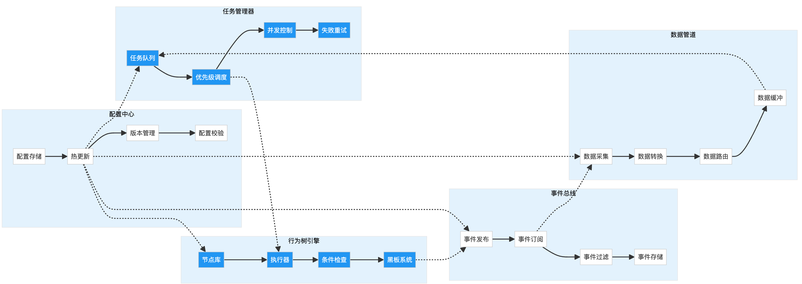 |
| 核心服务层是系统的中枢，任务管理器负责调度，行为树引擎执行复杂逻辑，事件总线实现解耦通信， 数据管道处理数据流，配置中心管理系统配置。 |
核心服务层是整个系统的"大脑"，负责协调各个模块的工作，提供基础服务支撑。
任务队列：维护待执行任务的优先级队列
优先级调度：基于优先级和紧急程度的调度算法
并发控制：管理任务的并发执行，避免资源冲突
失败重试：自动重试失败任务，支持退避策略
创建阶段：任务定义和参数验证
排队阶段：加入优先级队列等待执行
执行阶段：分配资源并开始执行
监控阶段：实时监控执行进度
完成阶段：结果处理和资源释放
抢占式调度：高优先级任务可抢占资源
时间片轮转：相同优先级任务公平调度
资源感知调度：根据资源使用情况动态调度
亲和性调度：相关任务尽量在同一节点执行
动作节点：执行具体的动作，如移动、抓取
条件节点：检查条件是否满足
控制节点：控制执行流程，如顺序、选择、并行
装饰节点：修改子节点行为，如重试、超时
Tick机制：定期触发树的执行
状态传播：节点状态向上传播
黑板系统：节点间共享数据
中断处理：支持执行中断和恢复
自定义节点类型
脚本节点支持
可视化编辑器
行为树模板库
事件定义：类型、来源、数据、时间戳
事件分类：系统事件、用户事件、硬件事件
事件优先级：紧急、高、普通、低
事件持久化：关键事件的存储和回放
主题式订阅：按事件类型订阅
内容式订阅：按事件内容过滤
通配符支持：灵活的订阅规则
订阅管理：动态订阅和取消
异步处理：事件处理不阻塞发布
批量发送：相似事件的批量处理
本地缓存：减少网络传输
负载均衡：多订阅者的负载分配
数据采集：从各种数据源收集数据
数据转换：格式转换、单位转换、坐标转换
数据路由：根据规则将数据发送到目标
数据缓冲：处理速度不匹配的缓冲机制
流式处理：实时处理数据流
批处理：定期处理批量数据
微批处理：小批量快速处理
复合处理：混合多种处理模式
数据验证：格式和范围检查
数据清洗：异常值处理
数据补全：缺失值填充
数据监控：质量指标跟踪
配置存储：集中存储所有配置
热更新：无需重启的配置更新
版本管理：配置的版本控制和回滚
配置校验：自动验证配置合法性
系统配置：核心参数、资源限制
硬件配置：设备参数、通信设置
算法配置：算法参数、模型路径
用户配置：界面偏好、快捷键
推送模式：配置更新主动推送
拉取模式：客户端定期拉取
订阅模式：订阅特定配置变更
缓存策略：本地缓存和更新
| 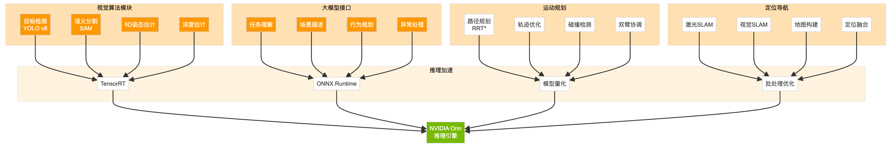 |
| 智能计算层集成了视觉、语言、规划和定位算法，通过NVIDIA Orin加速推理，实现实时AI处理能力。 |
智能计算层集成了各种AI算法，是机器人实现智能化的核心。通过NVIDIA Orin进行加速，实现实时的AI推理。
目标检测（YOLO v8）：实时检测环境中的物体
语义分割（SAM）：像素级的场景理解
6D姿态估计：估计物体的位置和朝向
深度估计：从RGB图像估计深度信息
图像采集：从多个相机获取图像
预处理：去噪、增强、归一化
特征提取：提取图像特征
模型推理：运行AI模型
后处理：NMS、坐标转换
结果输出：检测框、掩码、关键点
模型量化：INT8/FP16精度优化
批处理：多张图像并行处理
模型剪枝：去除冗余参数
知识蒸馏：大模型指导小模型
任务理解：理解自然语言指令
场景描述：生成场景的文字描述
行为规划：分解复杂任务为执行步骤
异常处理：处理意外情况的决策
云端API：调用OpenAI、Claude等服务
本地部署：部署开源模型如LLaMA
混合模式：本地+云端的智能路由
缓存机制：常见问题的本地缓存
任务模板：预定义的任务提示模板
上下文注入：注入环境和状态信息
链式思考：引导模型逐步推理
结果解析：结构化输出的解析
路径规划（RRT）*：全局路径规划
轨迹优化：平滑和优化轨迹
碰撞检测：实时碰撞检测
双臂协调：双臂协同运动规划
环境建模：构建工作空间模型
目标设定：设定目标位置和约束
路径搜索：搜索可行路径
轨迹生成：生成时间最优轨迹
安全检查：碰撞和奇异点检查
执行监控：实时调整轨迹
关节限位：考虑关节角度限制
速度限制：遵守最大速度约束
加速度限制：平滑的加减速
工作空间：避免超出工作范围
激光SLAM：基于激光雷达的建图定位
视觉SLAM：基于相机的建图定位
地图构建：实时构建环境地图
定位融合：多传感器融合定位
全局路径规划：A*、Dijkstra算法
局部避障：DWA动态窗口法
路径跟踪：纯追踪、MPC控制
多目标导航：任务优先级调度
地图存储：栅格地图、拓扑地图
地图更新：动态障碍物更新
地图匹配：重定位和回环检测
多楼层支持：电梯和楼层切换
TensorRT：NVIDIA推理优化引擎
ONNX Runtime：跨平台推理框架
模型量化：降低精度提升速度
批处理优化：提高GPU利用率
GPU调度：多模型共享GPU
显存管理：动态分配显存
优先级控制：关键任务优先
负载均衡：多GPU负载分配
推理延迟：毫秒级延迟监控
吞吐量：每秒处理帧数
资源占用：GPU/CPU使用率
模型精度：准确率跟踪
| 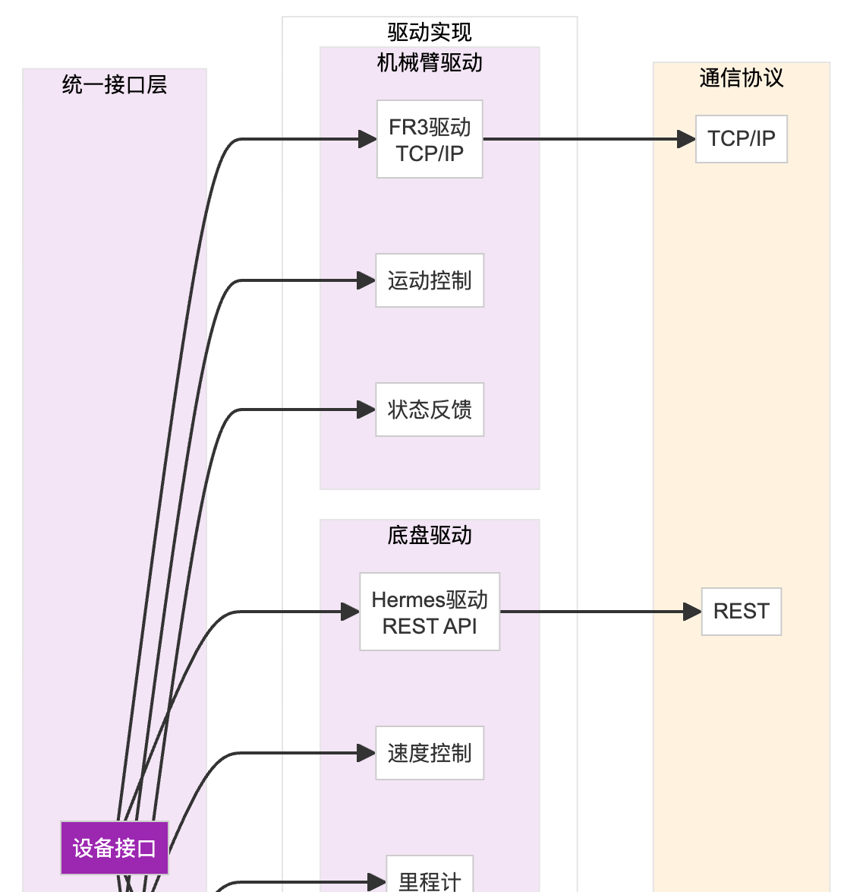 | 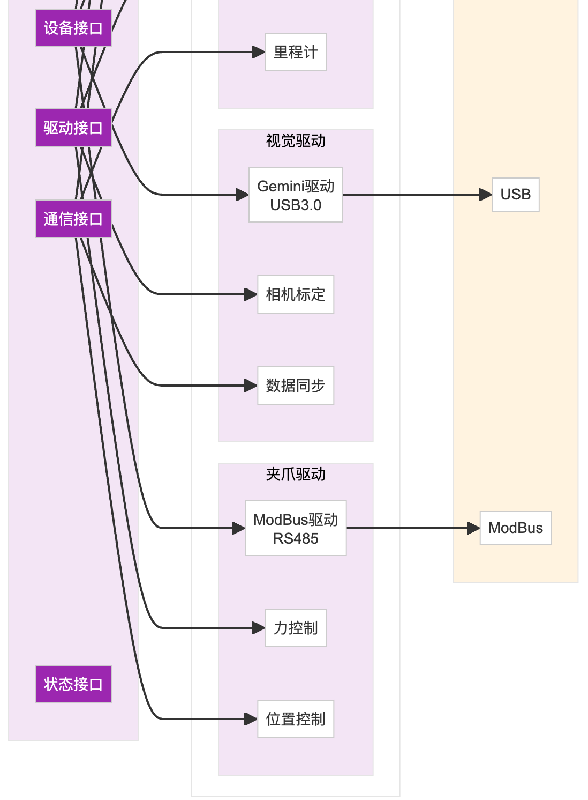 |
| 硬件抽象层通过统一接口屏蔽底层硬件差异，每种设备都有对应的驱动实现，支持不同的通信协议。 |
硬件抽象层（HAL）通过统一的接口屏蔽不同硬件的差异，使上层应用无需关心具体硬件细节。
设备接口：定义设备的基本操作
驱动接口：定义驱动的标准方法
通信接口：定义通信协议抽象
状态接口：定义状态查询和监控
统一的初始化流程
标准的错误处理机制
一致的数据格式定义
通用的配置方法
语义化版本控制
向后兼容性保证
废弃接口的过渡期
版本协商机制
通信协议：基于TCP/IP的私有协议
控制模式：位置控制、速度控制、力矩控制
状态反馈：关节角度、速度、力矩、温度
安全机制：限位保护、碰撞检测、急停
关节空间控制：直接控制各关节角度
笛卡尔空间控制：控制末端位姿
轨迹插补：线性、圆弧、样条插补
在线轨迹修正：实时调整运动轨迹
主从模式：一臂跟随另一臂
协同模式：双臂配合完成任务
碰撞避免：双臂间的碰撞检测
负载分配：根据负载能力分配任务
通信方式：REST API over HTTP
控制接口：速度控制、位置控制
反馈信息：里程计、电池、传感器
导航模式：手动、自动、SLAM
速度控制：设定线速度和角速度
路径跟踪：跟踪预定义路径
自主导航：基于地图的自主移动
避障策略：激光雷达实时避障
电源管理：电池监控和充电控制
故障诊断：电机、传感器故障检测
性能监控：速度、加速度、里程统计
维护提醒：定期维护和保养提醒
Gemini驱动：3个ToF相机的统一管理
2D相机驱动：USB相机的标准接口
数据格式：RGB、深度、点云、IR
同步机制：多相机时间同步
内参标定：相机内部参数
外参标定：相机相对位置
手眼标定：相机与机械臂关系
在线标定：运行时动态标定
图像预处理：去畸变、滤波
深度对齐：RGB与深度对齐
点云生成：深度图转点云
多视角融合：多相机数据融合
通信协议：ModBus RTU over RS485
控制模式：位置模式、力控模式
反馈信息：开合度、夹持力、状态
保护机制：过载保护、堵转检测
工具识别：自动识别安装的工具
参数配置：工具的TCP、质量、惯量
快换支持：工具快速更换接口
工具库：预定义工具参数库
力传感器接入：6维力/力矩传感器
柔顺控制：阻抗控制、导纳控制
力引导：通过力反馈引导运动
装配应用：精密装配的力控制
| 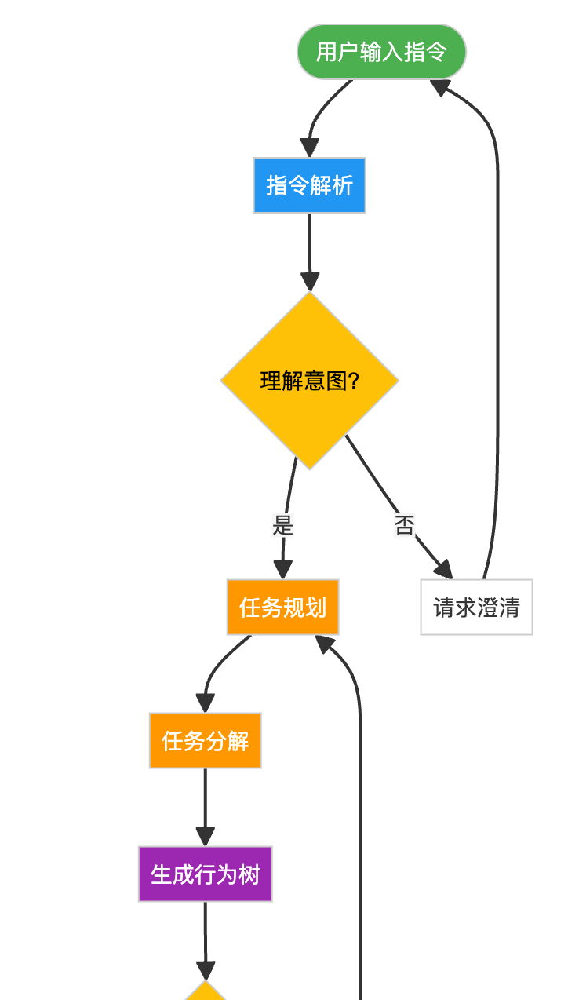 | 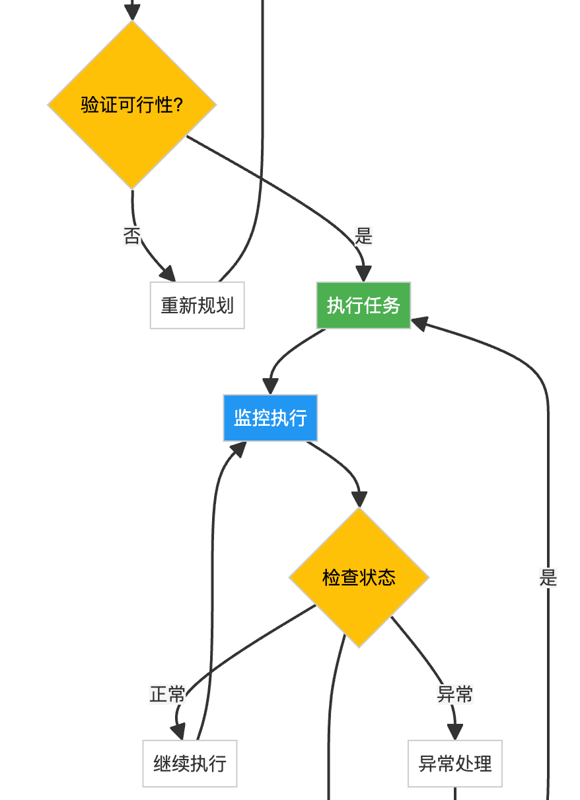 | 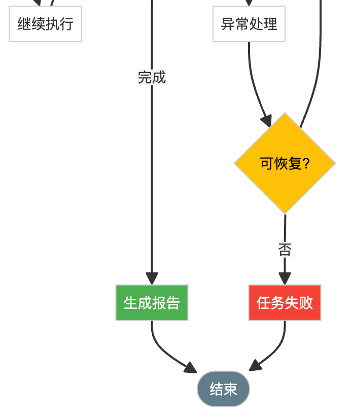 |
| 任务执行流程包含理解、规划、执行和监控四个主要阶段，支持异常处理和失败恢复机制。 |
任务执行流程图展示了从用户输入到任务完成的完整处理过程，包含了理解、规划、执行和监控四个主要阶段。
自然语言处理：将用户的自然语言转换为结构化指令
意图识别：识别用户的真实意图和目标
参数提取：提取任务相关的参数信息
歧义消除：处理指令中的歧义和不确定性
环境上下文：当前的环境状态和物体位置
历史上下文：之前的任务和交互历史
用户上下文：用户的偏好和习惯
任务上下文：相关任务的执行状态
能力匹配：检查机器人是否具备执行能力
资源检查：确认所需资源是否可用
约束验证：检查是否违反安全或操作约束
冲突检测：与其他任务的冲突检查
层次分解：将复杂任务分解为子任务
时序安排：确定子任务的执行顺序
依赖分析：分析任务间的依赖关系
并行识别：识别可并行执行的任务
节点选择：选择合适的行为树节点
结构构建：构建行为树的层次结构
参数配置：设置各节点的执行参数
条件设置：配置分支条件和循环条件
硬件资源：分配机械臂、夹爪等硬件
计算资源：分配CPU、GPU计算资源
时间资源：估算和分配执行时间
优先级设置：根据重要性设置优先级
启动执行：初始化执行环境
状态转换：管理任务状态变化
并发控制：协调多个并行任务
同步机制：确保任务间的同步
运动执行：控制机械臂和底盘运动
感知执行：执行视觉和传感器任务
决策执行：运行决策算法
交互执行：与用户或环境交互
轨迹修正：根据反馈调整运动轨迹
参数优化：动态优化执行参数
策略切换：根据情况切换执行策略
速度调节：根据负载调整执行速度
执行进度：实时跟踪任务完成度
性能指标：监控执行效率和质量
资源使用：跟踪资源占用情况
异常检测：及时发现异常情况
异常分类：识别异常类型和严重程度
恢复策略：选择合适的恢复方法
回滚机制：必要时回滚到安全状态
人工介入：严重异常请求人工处理
完成度评估：评估任务完成的程度
质量评估：评估执行结果的质量
效率分析：分析执行时间和资源消耗
经验总结：提取可复用的经验知识
执行报告：生成详细的执行报告
数据归档：保存执行过程数据
日志记录：记录关键执行信息
统计分析：更新统计数据
硬件释放：释放占用的硬件资源
内存清理：清理临时数据和缓存
连接关闭：关闭不需要的连接
状态重置：重置相关状态机
结果通知：通知用户任务完成
触发后续：触发相关的后续任务
数据同步：同步执行结果到其他系统
维护更新：更新系统维护信息
| 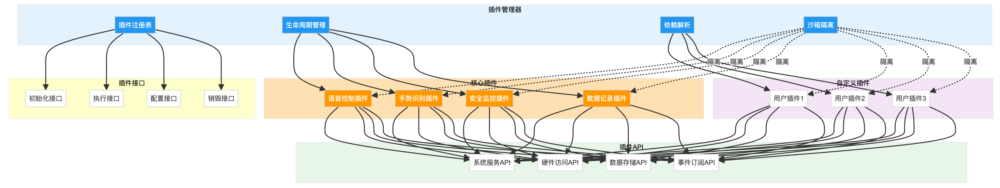 |
| 插件系统提供标准化的扩展机制，通过插件管理器控制插件生命周期，插件通过API访问系统功能， 沙箱隔离确保系统安全性。 |
插件系统提供了灵活的功能扩展机制，允许第三方开发者为系统添加新功能而无需修改核心代码。
插件注册表：维护所有已注册插件的信息
生命周期管理：控制插件的加载、初始化、运行、卸载
依赖解析：自动解析和加载插件依赖
沙箱隔离：确保插件运行的安全性
目录扫描：扫描指定目录发现插件
注册中心：从插件注册中心获取
手动注册：通过配置文件注册
热插拔：支持运行时加载和卸载
版本兼容性检查
多版本共存支持
自动更新机制
版本回滚功能
初始化接口：插件加载时调用
执行接口：插件功能的主要入口
配置接口：插件参数配置
销毁接口：插件卸载时调用
事件监听：监听系统事件
事件发布：发布自定义事件
事件过滤：设置事件过滤条件
事件优先级：设置处理优先级
UI扩展：添加新的界面元素
命令扩展：添加新的命令
服务扩展：提供新的服务
算法扩展：集成新的算法
功能描述：提供语音识别和控制能力
技术实现：集成语音识别引擎
使用场景：免手操作、远程控制
配置选项：语言选择、唤醒词设置
功能描述：识别手势进行控制
技术实现：基于视觉的手势识别
使用场景：直观的人机交互
配置选项：手势库定义、灵敏度
功能描述：实时监控系统安全状态
技术实现：多传感器融合监控
使用场景：确保操作安全
配置选项：安全区域、报警阈值
功能描述：记录系统运行数据
技术实现：高效的数据存储
使用场景：调试、分析、回放
配置选项：记录级别、存储策略
SDK提供：插件开发工具包
模板项目：快速开始的项目模板
调试工具：插件调试和测试工具
文档支持：详细的API文档
创建插件项目
实现标准接口
编写功能逻辑
添加配置支持
编写测试用例
打包和发布
遵循命名规范
处理异常情况
优化性能表现
提供详细日志
编写用户文档
资源访问权限：限制插件访问的资源
API调用权限：限制可调用的API
网络访问权限：控制网络访问
文件系统权限：限制文件操作
进程隔离：插件运行在独立进程
内存隔离：限制内存使用
CPU隔离：限制CPU使用率
异常隔离：插件异常不影响主系统
代码审查：插件代码安全审查
行为监控：运行时行为监控
日志审计：详细的操作日志
异常报告：安全事件报告
| 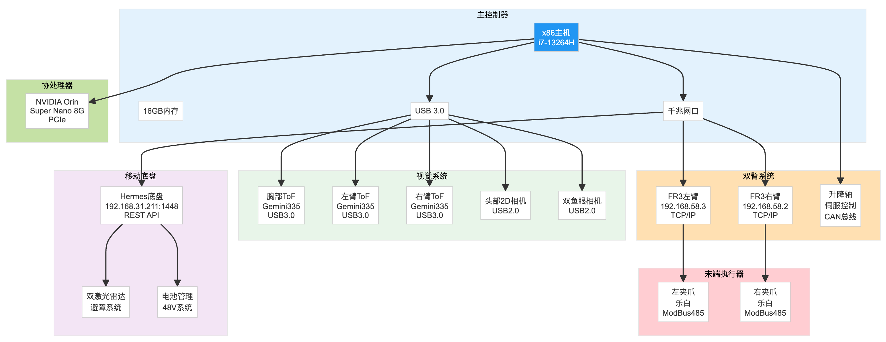 |
| 硬件设备通过不同的接口和协议连接到主控制器，包括以太网（机械臂、底盘）、USB（相机）、 ModBus（夹爪）和CAN总线（升降轴）。NVIDIA Orin作为AI协处理器通过PCIe连接。 |
硬件设备层包含了机器人的所有物理组件，通过不同的通信协议与主控制器连接，形成完整的机器人系统。
处理器：Intel Core i7-13264H，14核20线程
内存：16GB DDR5，可扩展至32GB
存储：512GB NVMe SSD，预留扩展位
接口：千兆以太网×2，USB 3.0×4，USB 2.0×2
Windows 11方案：适合快速原型开发，工具链完善
Ubuntu 22.04方案：适合产品化部署，实时性更好
双系统方案：开发和部署分离，灵活切换
NVIDIA Orin Nano 8G：AI推理加速
连接方式：PCIe 3.0 x4
功能分配：视觉处理、深度学习推理
功耗管理：10W/15W/25W可调
自由度：6轴
负载能力：3kg
工作半径：620mm
重复定位精度：±0.02mm
通信接口：千兆以太网
左臂IP：192.168.58.3
右臂IP：192.168.58.2
基座偏移：左臂(-190, 0, 550)，右臂(190, 0, 550)
工作空间：优化布局避免干涉
行程范围：300mm
驱动方式：伺服电机+滚珠丝杠
控制接口：CAN总线
定位精度：±0.1mm
承载能力：50kg
胸部相机：环境感知，广角视野
左臂末端：精确定位，手眼协调
右臂末端：精确定位，手眼协调
型号规格：Gemini335，分辨率640×480，帧率30FPS
头部主相机：1080P，用于人脸识别
左鱼眼相机：180°视角，侧方补盲
右鱼眼相机：180°视角，侧方补盲
数据接口：USB 2.0，带宽优化
内参标定：张正友标定法
外参标定：手眼标定算法
多相机标定：全局优化方法
在线校准：基于特征点的动态校准
驱动方式：差速驱动/全向轮
最大速度：1.5m/s
负载能力：100kg
续航时间：8小时
通信接口：REST API (192.168.31.211:1448)
前激光雷达：270°扫描，10Hz
后激光雷达：270°扫描，10Hz
检测距离：0.1-10m
角度分辨率：0.25°
电池类型：磷酸铁锂电池
电压规格：48V系统
容量：20Ah
充电方式：自动充电桩对接
电源分配：独立的控制和动力电源
品牌型号：乐白大行程夹爪
开合范围：0-150mm
夹持力：10-100N可调
控制方式：ModBus RTU over RS485
反馈信息：位置、力、状态
机械接口：ISO标准接口
电气接口：24V电源，RS485通信
气动接口：预留气动工具接口
自动识别：RFID工具识别
集成力传感器：6维力/力矩
测量范围：±100N，±10Nm
采样频率：1kHz
应用场景：柔顺控制、精密装配
主干网络：千兆以太网交换机
实时通信：EtherCAT预留
无线备份：5G/WiFi6冗余
时间同步：PTP/NTP时钟同步
主电源：48V转12V/24V/5V
隔离设计：控制与动力隔离
应急电源：UPS备用电源
功耗监控：实时功耗统计
主控散热：主动风冷+散热片
驱动器散热：分布式散热设计
环境适应：-10°C到45°C工作温度
热管理：温度监控和保护
模块化结构：便于维护和升级
线缆管理：拖链和线槽设计
防护等级：IP54防尘防水
减震设计：隔振垫和柔性连接
XC-OS系统架构设计充分考虑了轮式双臂机器人的特点，通过分层架构、模块化设计、标准化接口等技术手段，构建了一个灵活、可扩展、易维护的机器人操作系统。系统的每个层次和模块都有明确的职责和接口定义，支持快速开发和部署。通过完善的硬件抽象层，系统能够适配不同的硬件配置，为机器人应用的开发提供了坚实的基础。